Funny, how some seemingly trivial images stick in your head for decades. You can’t explain them, but there they are, stubborn memories that have no more apparent significance than countless others that have long since slipped away.
Among my own peculiarly steadfast recollections is one late-summer day on my grandparents’ dairy farm in western New York. I remember my cousin Bonnie and me, both of us 9 or 10 then, sprawled side-by-side and belly-down in cool green grass beneath one of the three old maples lined up like leafy-headed, one-legged sentinels in front of the big white farmhouse. The object of our fascination was a restless dinner-plate-size cluster of ladybugs - hundreds of them - at the foot of the tree. Not a hair’s width separated one ladybug from the other; they moved like a single red-shelled, black-spotted organism with 3,000 legs. With hands held sideways, karate-chop style, to form walls, we could steer them, nudge them forward or back, right or left, like cowpokes coaxing a miniature herd across valleys and over hills (the tree’s aboveground roots).
And that’s the entire memory - just that image, nothing more; no sense of how long we amused ourselves with those beetles, no recollection of the day’s events before or after.
I’m tempted to describe it as a moment frozen in time, but I know better.
Once or twice a year, if I am lucky, I make the trip back to Genesee County, N.Y., to see my family. Invariably on those visits, I am drawn to the site of my grandparents’ farm. I walk the familiar fields and woods, home at last. And always, at some point, I end up in the front yard beneath that maple where Bonnie and I and those beetles played. It must be a peculiar sight to passersby on the highway: a stranger sitting cross-legged among high weeds in an empty, overgrown field.
The farmhouse and the rambling timber-frame barns are gone, victims almost a quarter century ago to two boys in a hayloft toying with matches on a windy day. Gone, too, are those ladybugs … the birds singing in the boughs that long-ago summer … the golden dandelions on the lawn … that season’s whispering leaves … my gentle grandparents. Meanwhile, for now, I and the maples remain. And there are newcomers on the scene: asters and chicory in place of mown grass; a fresh crop of insects crawling over the maple’s roots; a son at my side.
Time, I have learned, does not freeze, nor do moments in it. Time is the unstoppable current on which we all ride, at our various speeds and on our various journeys, through this astonishing world. Each moment in each place in nature is a remarkable coming together, never to be repeated precisely so, of lives crossing paths in time; like twigs swept together for an instant, then drawn apart, in stream eddies.
Yet each of those “twigs,” each plant and animal on Earth, sharing a given place and a given time is driven by its own species’ biological clock, is traveling on its own genetically pummeled path from birth to death. Think of that: All in the blink of an eye, so much going on. For some, life is exceedingly short - only minutes for some bacteria, less than a day for an adult mayfly, perhaps a week for the luna moth. Those ladybugs we played with had but a few months of life beyond pupal infancy, while Bonnie and I had barely begun our species’ expected journey of three score and ten years. Those maples, I like to think, will still be standing half a century from now.
This swirl of varying life spans in nature, say biologists, is essential not only to each species’ survival but to the health of whole ecosystems.
Every multicelled organism’s life span is marked by three phases: embryonic, juvenile and adult. In the last phase, the individual reaches a reproductive peak of some duration or other, and then - well, the truth is it’s all downhill from there.
It’s a good thing, too - as long as you look at it from an objective, scientific viewpoint. Over the eons, each species’ characteristic life span has been delimited by the forces of survival and natural selection. Those forces, driven by sexual reproduction that yields succeeding generations of genetically unique but mortal individuals, have allowed the species to adapt to ever-changing environmental conditions. Immortal plants and animals, on the other hand, would be stuck in a genetic rut, susceptible to and ultimately doomed by change.
And then, of course, there is the more pragmatic purpose of a limited lifetime: Without death, there would soon be no room or resources for new generations.
So we live, reproduce and die, each of us - every plant and animal on Earth - in cadence to our species’ internal clocks.
But because we all share space and time with other creatures, our paths entwine, one influencing the other. The owl’s sharp-taloned swoop for sustaining protein brings a vole’s march through life to a screeching halt. A robin feeding its young: so long, squirming worm. Fly meets flycatcher. Little fish meets big fish. Green beans meet gardener. Each link in the food chain is forged by the premature end of one life to fuel another’s travels through time.
This partly explains why biologists distinguish between potential or maximum life span - how long a plant or animal can live under ideal conditions, with only its own clock to contend with - and “average,” or actual life span: the length of time an organism generally can be expected to survive in the wild. As you can see from the chart below, the two can be many years apart - in some cases, several real-world lifetimes.
And of course it’s not just predators that can bite into a creature’s life span. There’s weather: snow, wind, ice, frost, floods, heat, drought and more. Plants and animals drown, freeze or die of thirst or malnutrition. And then there’s disease: deadly viruses, bacteria and fungi that can bring down the tallest oak or the strongest mammal. Plus, there are the life-draining, pathogen-spreading parasites - internal and external - that plague virtually every animal in the wild.
But all these forces also have a positive effect: They work together to keep plant and wildlife populations in functional balance. The denser the population of a given species in an area, the more susceptible that species is to death from various causes. In a meadow overrun with field mice, for instance, the food supply dwindles and some mice starve. Raptors, foxes and other predators are attracted to the easy pickings. Because of overcrowding, parasites and disease spread among the rodents more readily. A hard winter or extended drought takes a greater toll on the weakened population than it would on a healthy one.
As a result of all this, the area’s field mouse population returns to a sustainable level. There’s enough food again for every little nibbling mouth. Predators have to settle for a more varied diet. Disease and weather have less impact.
To one extent or another, these counterbalancing forces apply throughout nature, to flora as well as fauna. Over the long haul, the populations of species in habitat undisturbed by human activities tend to remain more or less stable. Weather and other wild cards inevitably cause population levels to rise or fall, but - minus catastrophic events - those fluctuating levels usually stay within a consistent range. Births and deaths within each species maintain a teeter-totter balance.
Nature, in other words, seeks diversity and strives to maintain equilibrium.
Of course, areas “undisturbed by human activities” grow ever-fewer and farther between - and could soon vanish altogether, given such macrodisturbances as global warming. In too many cases, our impacts have reduced the population of a species to a point where it could no longer sustain itself; extinction has been the result. And although our species has managed to prevent many human diseases, we’ve failed to control our population, steadily increasing our demands on the planet’s finite resources. The full impacts of our actions and inactions remain to be seen.
Go outdoors, stand in one spot and look at the life careening through space and time with you. Each organism around you, from the tiniest mite to the mightiest tree, is on a sure course from birth to death. For some, it is a passage of only moments; for others, it is days, months, years or centuries. You will outlive many; some will outlive you. But in this instant your paths intertwine, creating the here and now. And so it has always been: Earth’s organisms large and small, lives long and short, crossing and recrossing from moment to moment, millennium to millennium.
It is the weaving of our planet’s masterwork. It is the web of life.Why do some animals have longer biological life spans than others? Size often is a key factor. In general, larger species within the same group (mammals, reptiles, amphibians, etc.) live longer than their smaller cousins. At the most, for example, a tiny spring peeper treefrog may live three to four years, while a bullfrog can live a decade and a half. At 4 years old a little bluntnose minnow is elderly, while a largemouth bass is barely middle-aged. Large mammals tend to be proportionately long-lived (elephants, up to 80 years, whales a century or more) while the lives of small mammals often are fleeting (a year for an average chipmunk).
The reason? Smaller creatures have faster metabolisms. Their hearts beat faster, they breathe more rapidly, their cells burn energy at a higher rate to keep their bodies warm and nourished - so the little animals tend to wear out sooner. In its brief lifetime of a few years, a mouse’s heart will beat as many times - or a bit more - than a 69-year-old elephant’s: roughly 1 billion. It’s as though small animals’ bodies zip through their lives on fast forward.
These small-versus-large, live-fast-die-young principles don’t hold consistently true, however. Small dogs, for instance, generally live longer than large dogs. An African lion’s 14-year average life span is roughly that of a household cat. And one of nature’s fastest-burning metabolic fireballs - the ruby-throated hummingbird (above) - can live nearly a decade, about twice the average life span of a waddling woodchuck.
The reasons behind nature’s wide-ranging life spans, it seems, are - like life itself - varied and uncertain.
Read about Real vs. Ideal Life Spans, and discover the ages of the longest-lived plants and animals.
|
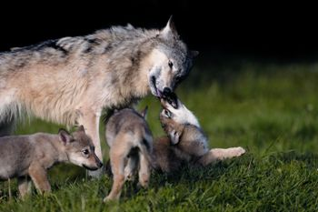 TOM BRAKEFIELD/GETTY IMAGES For all animals, every new generation brings with it new possibilities. |
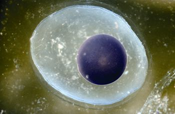 DWIGHT KUHN Each spring, spotted salamanders mate and the females lay eggs in vernal pools. |
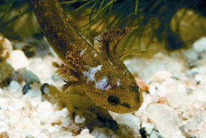 DWIGHT KUHN In the middle stage of life for the spotted salamander, the larvae live underwater and develop gills. |
|
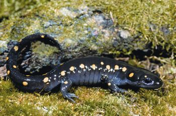 DWIGHT KUHN Six months after starting life as an egg, an adult spotted salamander moves onto land. |
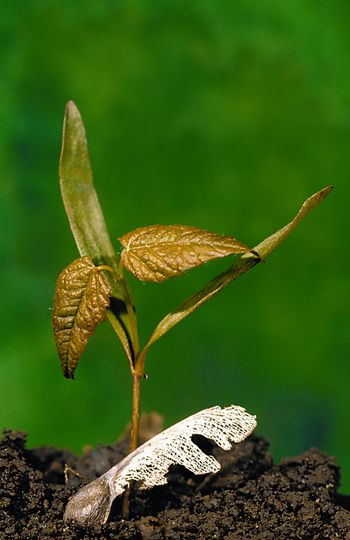 DWIGHT KUHN Under the right circumstances, a red maple will live for about 70 years. |
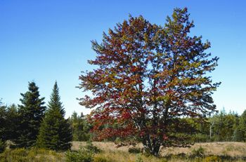 DWIGHT KUHN At about 35 years, this red maple is only middle-aged. |
|
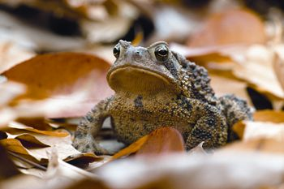 MASLOWSKI PRODUCTIONS The American toad has an ideal life span of 10 years, but typically lives for only about one year. |
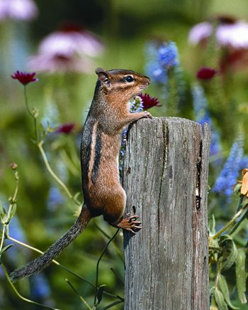 RICHARD DAY/DAYBREAK IMAGERY The eastern chipmunk could live for three years or more, but typically only lasts for about one year. |
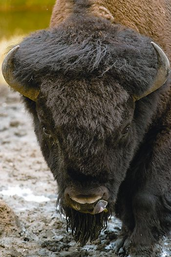 JANET HORTON In the wild, bison live for about 15 to 20 years. Captive and exceptional bison in the wild may live for about 40 years. |
|
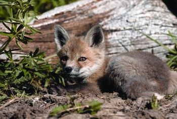 RICHARD DAY/DAYBREAK IMAGERY In the wild, the red fox averages about three years; its ideal potential is about 12 years. |
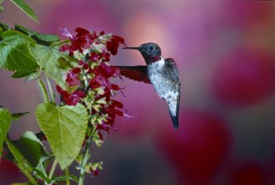 RICHARD DAY/DAYBREAK IMAGERY The ruby-throated hummingbird’s heart beats more than 1,200 times a minute when the bird is in flight; 250 times a minute when at rest. |
|